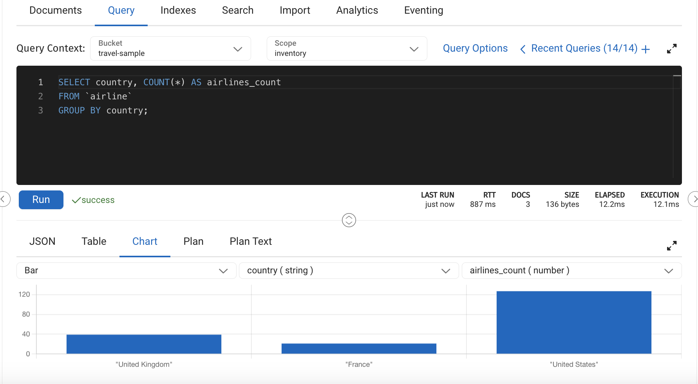
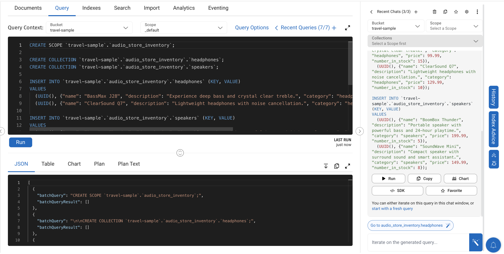
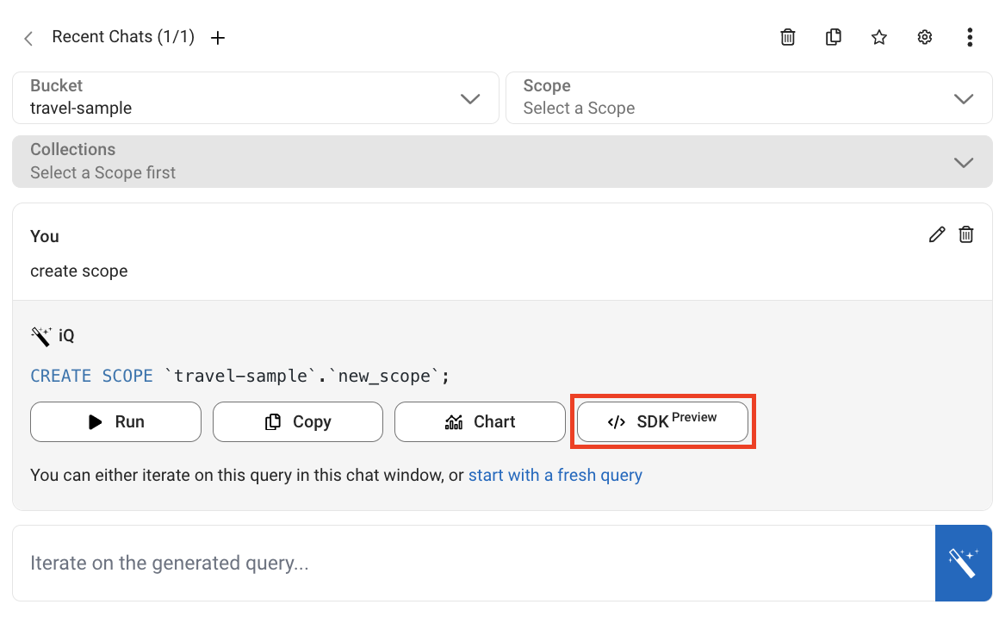
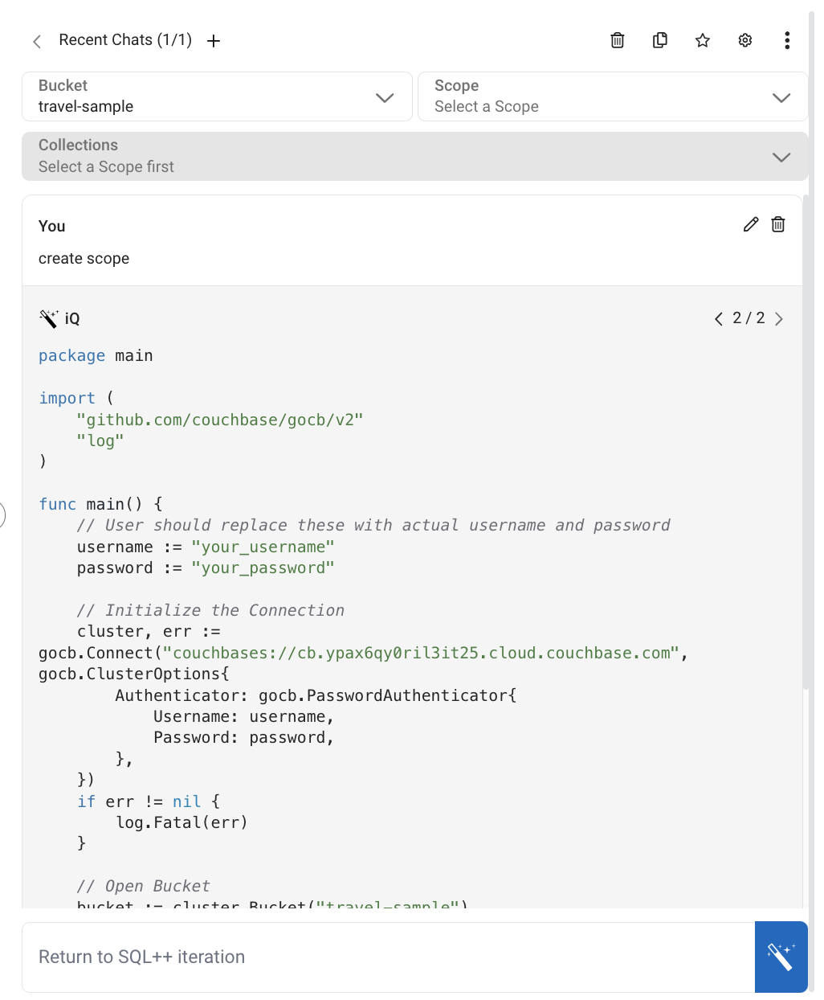
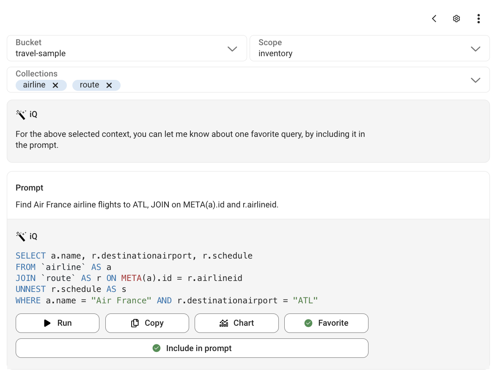

Get Started with Capella iQ
- how-to
| Remember that Capella iQ harnesses the power of a third-party large language model (LLM) to improve your queries. Do not provide sensitive data in the prompt such as personally identifiable information or any confidential information that you would not want shared. Because technology built on LLMs can also suffer from hallucinations from time to time, be sure to review the output. |
Capella iQ is your partner in Capella, allowing you to work faster and assist you directly in the Capella UI. It uses a large language model (LLM) and Couchbase-specific knowledge to generate SQL queries and more based on natural language prompts. For example, you can ask Capella iQ to generate a SQL query in a database with the travel-sample dataset using the “Count the number of airlines per country” prompt. Capella iQ also produces responses based on the context of a chat session. You can iterate on this query with another prompt, such as “Only count those in the United States.”
| Only questions that relate to your database and Couchbase generate a response. |
Prerequisites
-
The organization owner has accepted the Capella iQ Supplemental Terms. For more information, see Configure Capella iQ.
-
A database with the Data, Index, and Query services. To create a database, see Create a Database
-
If you’re using Capella iQ to create SDK code, you need database access credentials to implement it.
-
(Optional) Import the Capella sample data. If you’re using a trial database, it already has the sample data.
Open Capella iQ
Capella iQ is a part of the query editor in Capella’s Data Tools. As part of the Capella UI, the query editor is like an IDE you can use to work with data, documents, queries, indexes, and more.
-
From the Databases tab, open your database.
-
Click .
-
In the query history area, click iQ.
Generate SQL++ Queries
| Always review every query that Capella iQ returns before running it. |
Use sample data to generate SQL++ queries with conversational questions.
-
At the top of the Capella iQ pane, use the lists to choose a bucket, scope, and up to four collections.
After you choose your collections, Capella iQ suggests some sample queries to start working with your data.
-
Generate a SQL++ query using a suggestion or provide a prompt for a custom query:
-
Click a suggestion to have Capella iQ return a SQL++ query relevant to the chosen collections.
-
To generate a custom query, type your prompt in the Capella iQ message field.
-
-
Review the query that Capella iQ returns.
-
Click Run to run the query in the query editor as is, or modify it using follow-up prompts.
Visualizing Results in Charts
When Capella iQ generates a query it also includes a Chart button so you can visualize the query results.
For example, suppose you want a count of the airlines in each country in the travel-sample dataset.
-
At the top of the Capella iQ pane, use the lists to choose the following:
-
Bucket:
travel-sample -
Scope:
inventory -
Collections:
airline
-
-
Enter or click the suggested "Count the number of airlines per country" prompt.
-
In the suggested results, click Chart.
-
In the query editor results area, the results appear as a chart.
Like any chart the query editor returns, you can change the chart type and data options. For more information about using charts, see Chart Format.
Create Scopes and Collections
You can create scopes and collections using natural language prompts with Capella iQ.
For example, you could prompt Capella iQ to create a scope named trains and a collection named operator.
-
At the top of the Capella iQ pane, choose a bucket.
Capella iQ suggests a sample query that creates a scope with collections and sample data.
-
Generate an SQL++ query that creates scopes and collections using the provided suggestion or provide a prompt for a custom query:
-
Click the suggestion to have Capella iQ return a related SQL++ query.
OR
-
Enter a prompt. For example, "create a scope named trains and a collection named operator"
-
-
Review the query that Capella iQ returns.
-
Run the query as is by clicking Run, or modify it using follow-up prompts.
The query output appears in the results area of the query editor. When you create a new scope and collection, Capella iQ shows a suggestion link to select the new collection so you can start working with it.

Generate Sample Data
You can ask Capella iQ to generate realistic sample data and insert it into your database. Generating sample data is helpful when testing configurations and learning about Capella. For example, suppose you’re building an application that requires data about national parks in the United States. You can use Capella iQ to populate your database with relevant data.
| The provided prompts are for example purposes. With Capella iQ, you can format your prompts differently to get the same information. |
-
Create a new scope and collection for national parks data:
-
With only a bucket selected, enter the following prompt:
create a scope named parks and a collection named usaparks -
Review the query that Capella iQ returns and click Run.
-
-
Insert realistic sample documents into the
usaparkscollection:-
Enter the following prompt:
insert 10 real-looking sample documents of USA national parks in the usaparks collection using uuid() as the key -
Review the query that Capella iQ returns and refine it with further prompts if needed.
-
Click Run.
-
Generate SDK Code (Preview)
To help speed up application development, Capella iQ can generate SDK code based on your prompt.
-
At the top of the Capella iQ pane, use the lists to choose a bucket, scope, and up to four collections where applicable.
-
Submit a prompt for a custom query. For example, "create a scope."
-
When the query suggestion appears, click SDK Preview.
When clicking SDK Preview for the first time, the iQ Settings dialog appears so you can select your preferred SDK language. After choosing a language, the SDK Preview button changes to the name of your chosen language. In the results area of the query editor, the SDK code appears with an option to copy it.
 -
Review any code before using it and replace
your_usernameandyour_passwordwith your database access credentials.You cannot iterate on the SDK code that Capella iQ suggests at this time. When you return to the Capella iQ prompt field, you return to SQL++ query generation.
Add a Query to Favorites
After successfully running a query suggestion from Capella iQ, the prompt response adds the Favorite button.
Marking a query as a favorite lets you refer back to it and gives the option to include it as part of your prompts. Including a favorite query in your prompts can improve Capella iQ’s accuracy and usability across your chat sessions. For example, this is useful when working with JOINs. If you prompt Capella iQ to use a JOIN, you can save the successful query so that subsequent queries can reference this JOIN. You can then prompt Capella iQ without having to mention this JOIN.
| Only one of your favorite queries can be included in your prompts. |
View all favorite queries by clicking Browse favorite queries (⭒).

On this screen, you can remove any favorite queries by deselecting Favorite. Similarly, you can remove a favorite query from future prompts—but keep it as a favorite—by deselecting Include in prompt.